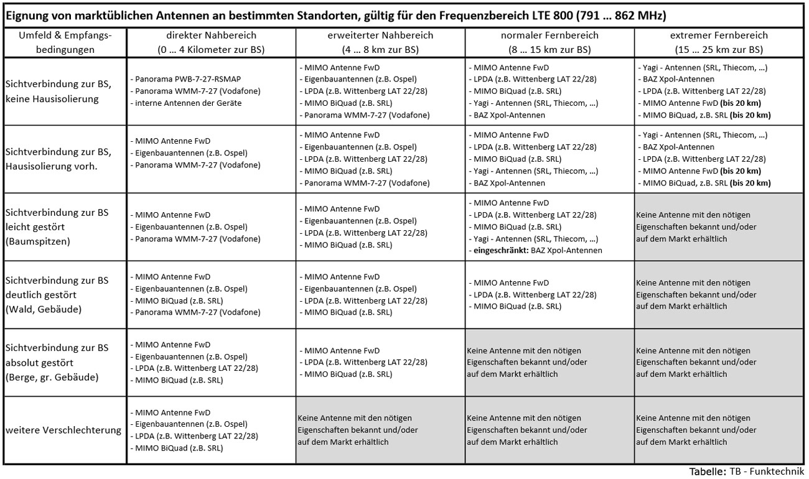

Wohnen in Stellenwiese (Kierling) umringt von Wald, d.h. keinen Sichtkontakt zu irgendeinem Sendemast.
Auf senderkataster.at finde ich einige LTE Antennen in 2-6km Entfernung allerdings nicht ob/welche von t-mobile genutzt werden und auch nicht welche Frequenz genutzt wird. Wo kann man das erfahren?
als anhaltspunkt ist die senderkataster.at schon ganz gut, aber leider wars das auch schon mit infos, wenn sich inzwischen nicht was getan hat.
lediglich standort, montageart, sendeleistung und provider werden auf anfrage beantwortet. welche frequenz verwendet wird und ob die sektorantenne
überhaupt in deine richtung guckt, ist leider so nicht zum heraus bekommen. falls da wer neue infos hat, bitte gerne her damit!
du kannst dich aber nachfolgend orientieren: 1800er und 2600er sind eher frequenzen für ballungsräume, die 800er für ländliche gebiete.
die richtung der sektor antennen kannst du "überprüfen" indem du, so wie ich, dort hin fährst und guckst in welche richtung sie zeigen,
sofern vom der rtr (senderkataster.at) nicht die info kommt, das da mehrere provider drauf hängen
die antenne hat für mein gefühl eine zu große verstärkung. das ist nämlich auch limitiert und du darfst da nicht mit zuviel sendeleistung zum sendemasten funken
wenn du langes kabel hast und damit zugleich wieder viel leistung verlierst klappt das womöglich. also lte-modem, 2 meter kabel und die antenne mit 24db gewinn
klappt eher nicht! da steht übrigens auch privatverkauf dabei?!?!
guck mal da, da gibts einige gute infos und meiner meinung nach auch gute und preiswerte antennen, zu finden unter vorschriften:
https://www.brennpunkt-srl.de/
nachstehend ein auszug aus der website mit rechenbeispiel:
Rechenbeispiel für die Zulässigkeit einer Kombination von LTE-Gerät und Antenne:
Für LTE sind 23dBm mit einer Toleranz von +2dB (=max.25dBm) erlaubt.
Geräte-Ausgangsleistung ohne Antenne in dBm + Antennengewinn in dBi - Verluste in Kabel, Stecker, usw. in dB <= 23 (+2dB Toleranz)
Wenn man davon ausgeht, daß ein LTE-Gerät mit seinen angeschlossenen, kleinen Antennen eine EIRP von 23dBm einhält, kann man
für diese Antennen 2dB abziehen, was für das Gerät eine Ausgangsleistung von 21dBm ergibt. Man kann daher daran eine Antenne mit einem
Gewinn abzüglich der Kabelverluste von 4dBi anschließen. Z.B. Geräteausgangsleistung = 21dBm + Antennengewinn 8dBi - Kabelverluste von
4dB für ein 15m langes Kabel bei LTE 800MHz ergibt 25dBm was gerade noch zulässig wäre.
hoffe es war jetzt nicht zu viel information
lg
Bearbeitet
von 5igi3lue
jr08
Hi Sigi,
1. sorry fuer den spaeten reply und 2. uffff... das ist eine Wissenschaft! vielen Dank fuer Deine ausfuehrliche Antwort!!
ad zu stark: Waere folgende Antenne besser fuer die 3-6 km?
bezueglich der masten.. (bevor ich hinfahre) wie kann man feststellen ob die antenne von t-mobile ist? bzw. gibt t-mobile hier Auskunft? Habe gelesen die tun das nicht aus welchen Gruenden auch immer.
thx nomal
jr
SigiBlue
ja da stimme ich dir zu, das ist fast schon wissenschaft.. bei mir läufts zum glück recht brauchbar aber perfekt ist was anderes
inzwischen hab ich ein bisschen geguckt und die, die du ursprünglich vorgeschlagen hast, war glaub ich ein privat verkauf (steht unten bei den details), womöglich stimmen die angaben garnicht und es ginge trotzdem. allerdings würde ich da sicherheitshalber neu kaufen.
ja dabendorf kenn ich, der hersteller zählt meines wissens zu den führenden, ebenso wie
https://www.fts-hennig.de/
. aber nun sind wir wieder beim thema, ist die 800er für dich die richtige bzw. bist du im ländlichen bereich? übrigens habe ich bei fts-henning auch die wittenberg gefunden
mein letzter wissenstand war, das mir die 0900-technik hotline keine auskunft über die sender gegeben hatte oder nicht konnte/durfte. hängt wohl mit datenschutz, etc. zusammen. dein erster lösungsansatz wird wohl nichts an
http://www.senderkataster.at/karte
vorbei führen!
dazu gibst du oben deine adresse bzw. den ort ein und orientierst dich, welcher sender der zutreffende ist und dann mit der maus darüber fahren mouse-over), links werden sogleich ein paar infos zum entsprechenden sender angezeigt, dann auf die schaltfläche standortanfrage versenden. auf den link für kontaktformular und daten ausfüllen. bei "ihre nachricht" habe ich immer reingeschrieben: "bitte um senderinformationen wegen providerwechsel" spätestens nach eine woche sollten die infos per mail geschickt werden. solltest du mehrere zugleich anfragen wollen ist das schwierig, da du ja die sender bei der anfrage nicht auseinander halten kannst.
ein paar screenshots helfen dir eventuell ein wenig,
Wow, cool das dies so schnell geht, wenn ich das richtig in den E-Mails gelesen habe.
Ich hatte bis jetzt noch nicht dort nachfragen müssen, da ich bei den meisten Sendern anhand der Container und Racks erkennen konnte, welcher Anbieter den Sender betreibt.
SigiBlue
vor einer Stunde schrieb IT-Freak:
Wow, cool das dies so schnell geht, wenn ich das richtig in den E-Mails gelesen habe.
ja ging meistens schnell, einmal hab ich aber etwa eine woche gewartet, sonst recht fix
jr08
Habe nach einem Tag (sic!) Eine Antwort bekommen
Zitat
"Bei der von Ihnen angefragten Anlage handelt es sich um einen Sharing-Standort, der von Drei (GSM/UMTS/LTE), A1 (GSM/UMTS/LTE) und T-Mobile (GSM/UMTS/LTE) betrieben wird.
Dem Senderkataster liegen die Informationen vor, welche Technologie auf den Standorten eingesetzt wird. Dies sehen Sie auch in den Basis-Informationen, etwa GSM, UMTS und/oder LTE.
Die genauen Frequenzen einer Sendeanlage sind dem Senderkataster nicht bekannt."
Wegen der Frequenz leider keine Info
Kann ich in jedem Fall eine 800er verwenden? Laut Tabelle von
http://www.lte-anbieter.info/

...wuerde ich mich in der dritt-letzten Zeile, zwischen ersten und zweiten Spalte einordnen... wir sind im laendlichen Raum (die Antenne steht auf einem Feld, wir auf einem kleinen Berg mitten im Wald komplett von Baeumen umzingelt (kein Sichtkontakt). Ich habe ein bisschen weiter gesurft (Danke fuer die Links!) und wuerde mir nun diese ueberlegen:
{kind=link}
{kind=link}
{kind=link}